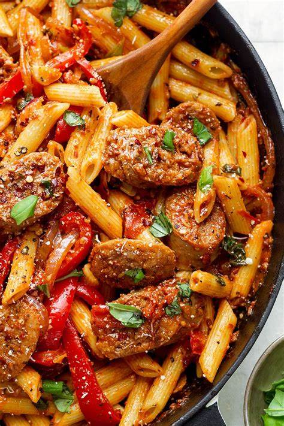

Sausage Pasta
Back to Main Menu

Description
Another recipe I cooked a lot when I was studying abroad. It's hearty, protein filled, and will warm you up.
Ingredients
- Pasta (I like Penne)
- Jarred Red sauce
- Pork Sausage
- Bell Pepper
- Fresh Parsley (optional)
- Fresh Basil (optional)
- Onion
- Salt and Pepper
Instructions
- Start boiling a pots of water.
- Cut up the sausage and then pan fry. When cooked through, set aside.
- Start cooking your pasta to al dente.
- Dice onion. Start sauteing in some oil. Slice bell pepper into strips and add to pan.
- Throw your pasta in there and then throw the sausage in. Put in some jarred red sauce.
- Saute for a few more minutes and you're done! Garnish with optional parsley and basil.